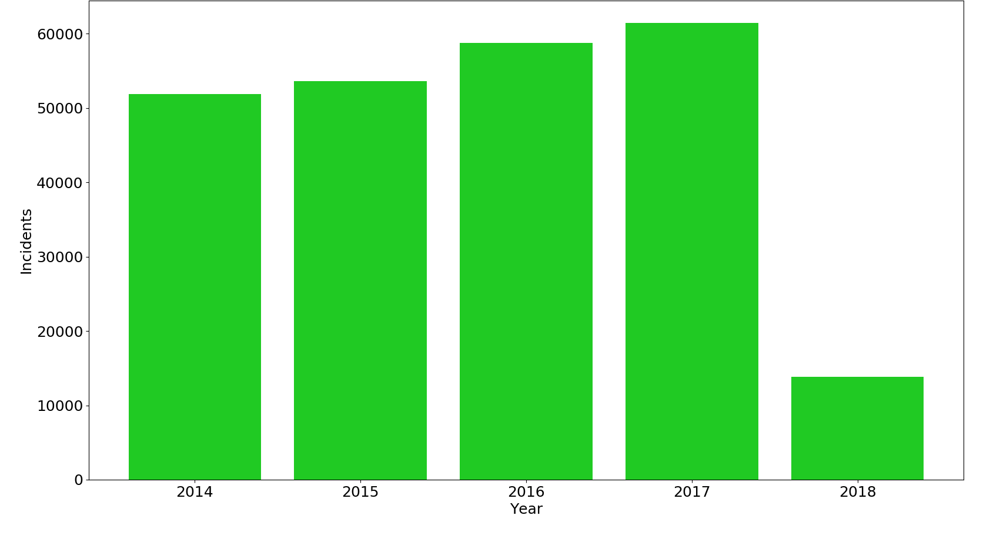

By year
Number of gun incidents |
Number of people killed and injured |
|  |  |
Gun incident characteristics |
|
Did you know that each year, there are more criminals killed by armed citizens than police officers? Kleck, Point Blank: Guns and Violence in America, (1991):111-116, 148. |